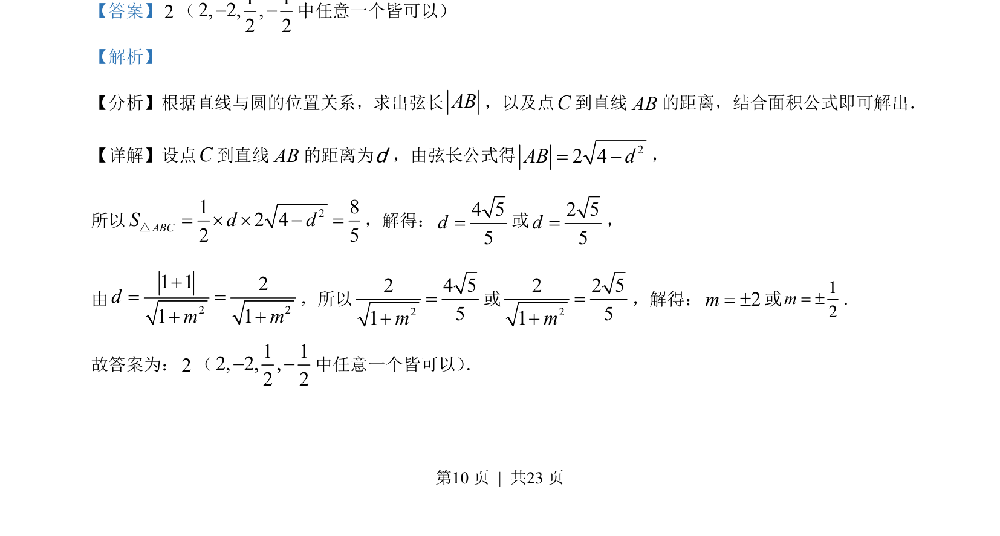

考点：直线与圆的位置关系 点到直线距离公式 弦长 三角形面积
该题考查直线与圆相交的弦长、点到直线距离及三角形面积，求参数。

📄 原 PDF 第 10 页：
素材/真题/吉林/2008-2024·（吉林）数学高考真题/2023年高考数学试卷（新课标Ⅱ卷）（解析卷）.pdf
【答案】2（1 12, 2, ,2 2 中任意一个皆可以） 【解析】 【分析】根据直线与圆的位置关系，求出弦长AB，以及点C到直线AB的距离，结合面积公式即可解出． 【详解】设点C到直线AB的距离为d，由弦长公式得 22 4AB d= ， 所以 21 82 42 5ABCS d d= ´ ´ =△，解得：4 55d=或2 55d=， 由 2 21 121 1dm m= = ，所以 22 4 551m= 或 22 2 551m= ，解得：2m= ±或12m= ±． 故答案为：2（1 12, 2, ,2 2 中任意一个皆可以） ．